Краски и химия в Ташкенте
Интерьерные краски
 Краска интерьерная белая матоваяот 307 000 сум
Краска интерьерная белая матоваяот 307 000 сум Набор валиков и кистейот 79 000 сум
Набор валиков и кистейот 79 000 сум Краска интерьерная белая, 2,5 лот 93 000 сум
Краска интерьерная белая, 2,5 лот 93 000 сум Краска моющаяся латексная, 10 лот 418 500 сум
Краска моющаяся латексная, 10 лот 418 500 сум Краска для потолков, 10 лот 263 500 сум
Краска для потолков, 10 лот 263 500 сум Краска интерьерная «Песок», 2,5 лот 128 500 сум
Краска интерьерная «Песок», 2,5 лот 128 500 сум Краска интерьерная «Оливка», 2,5 лот 126 000 сум
Краска интерьерная «Оливка», 2,5 лот 126 000 сум Краска интерьерная «Небо», 2,5 лот 130 000 сум
Краска интерьерная «Небо», 2,5 лот 130 000 сум Краска интерьерная «Терракота», 2,5 лот 130 000 сум
Краска интерьерная «Терракота», 2,5 лот 130 000 сум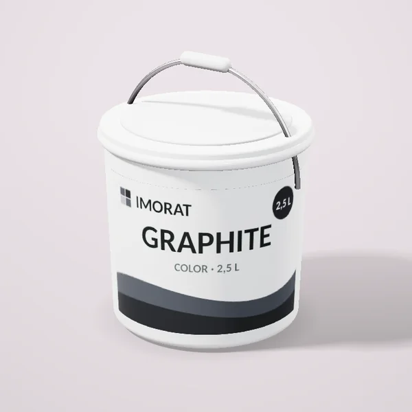
Краска интерьерная «Графит», 2,5 лот 130 000 сум- Валик малярный 25 смот 35 500 сум
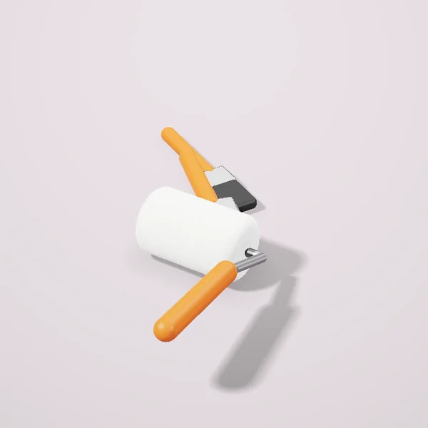
Набор кистей, 5 штот 47 500 сум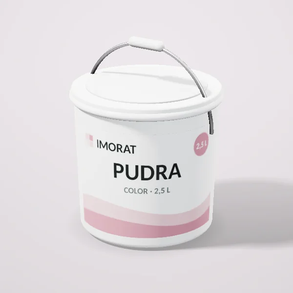
Краска интерьерная «Пудра», 2,5 лот 25 500 сум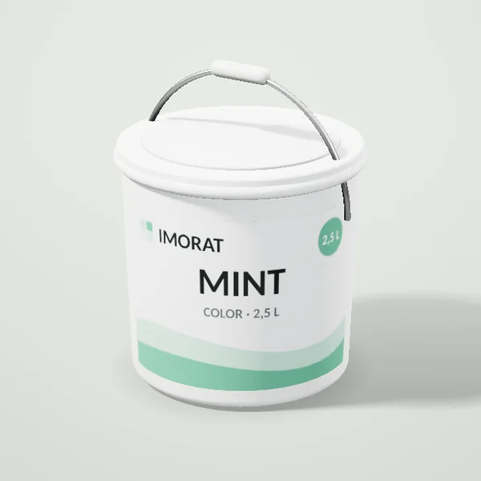
Краска интерьерная «Мята», 2,5 лот 26 000 сум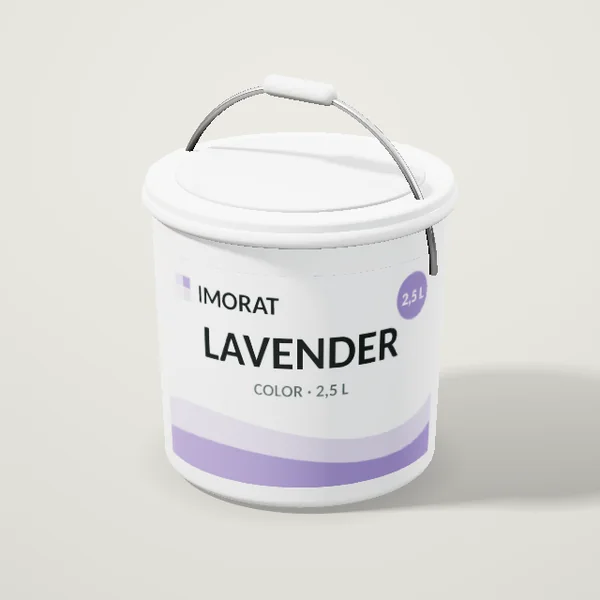
Краска интерьерная «Лаванда», 2,5 лот 26 000 сум
Фасадные краски
- Краска фасадная атмосферостойкаяот 520 000 сум
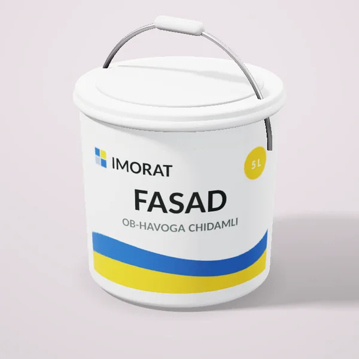
Краска фасадная, 5 лот 197 500 сум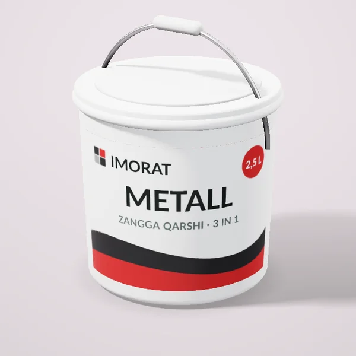
Краска по металлу 3‑в‑1, 2,5 лот 286 000 сум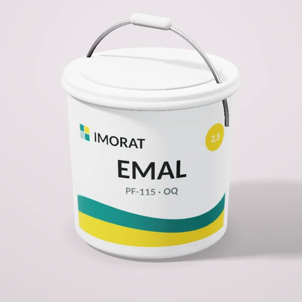
Эмаль ПФ‑115 белая, 2,5 кгот 182 000 сум
Грунтовки
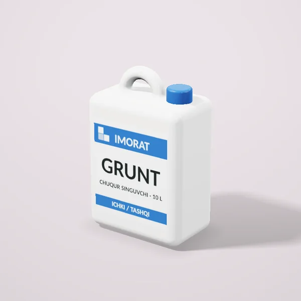
Грунтовка глубокого проникновенияот 120 000 сум- Грунтовка глубокого проникновения, 5 лот 66 000 сум
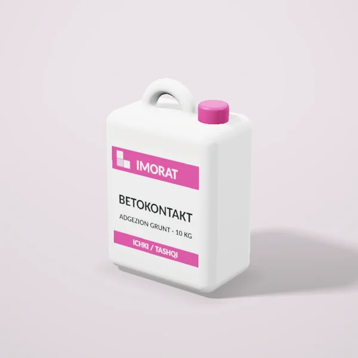
Бетоконтакт, 10 кгот 166 500 сум
Герметики и пена
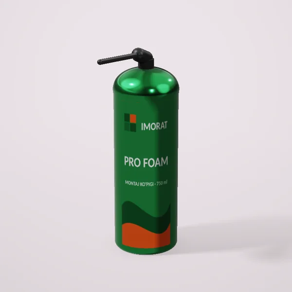
Пена монтажная профессиональная, 750 млот 50 500 сум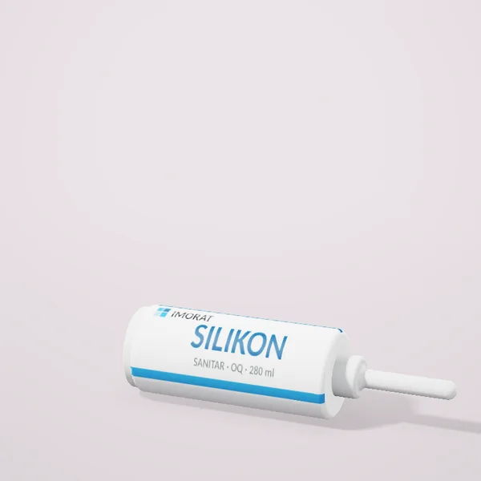
Герметик силиконовый санитарныйот 38 000 сум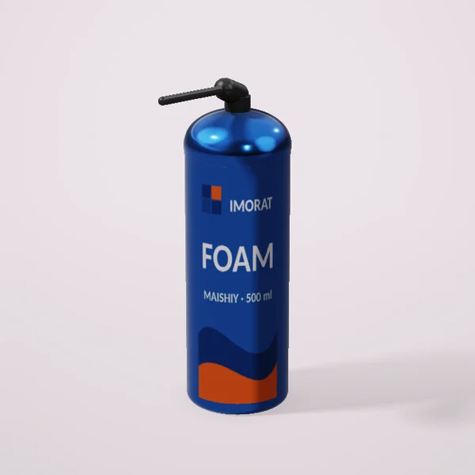
Пена монтажная бытовая, 500 млот 33 000 сум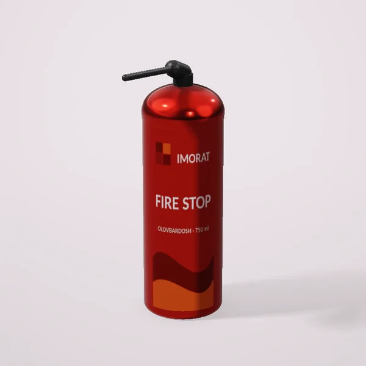
Пена огнестойкая, 750 млот 82 000 сум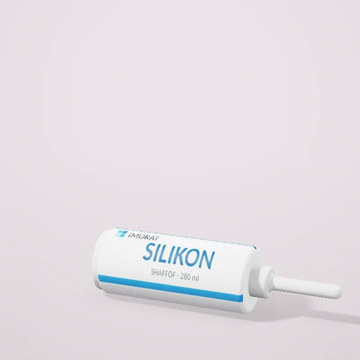
Герметик силиконовый прозрачныйот 38 000 сум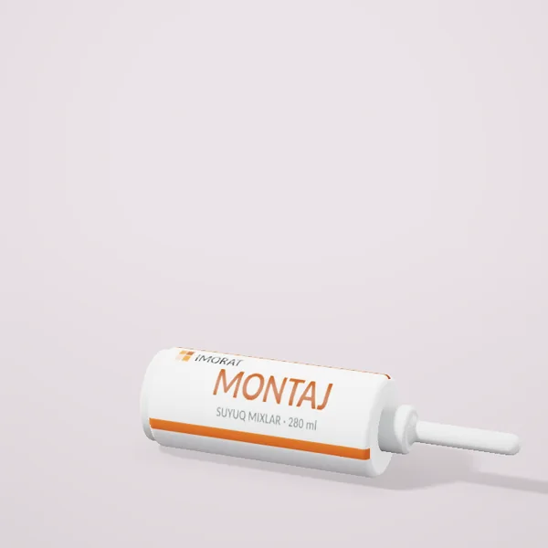
Жидкие гвозди, 280 млот 45 500 сум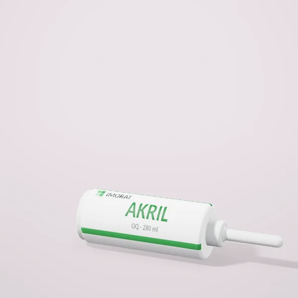
Герметик акриловый белыйот 30 000 сум